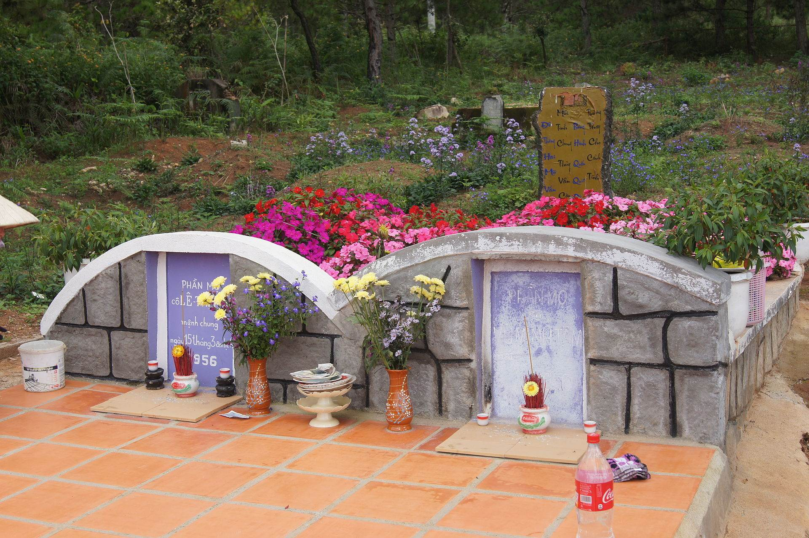

Đồi Thông Hai Mộ, một địa danh nổi tiếng nằm giữa lòng thành phố ngàn hoa Đà Lạt, không chỉ thu hút du khách bởi vẻ đẹp nên thơ của những đồi thông xanh bạt ngàn mà còn bởi câu chuyện tình yêu bi thương và đầy cảm động gắn liền với nó. Nơi đây đã trở thành biểu tượng cho tình yêu bất diệt, là điểm đến đầy ý nghĩa cho những ai muốn tìm về với sự lắng đọng và chiêm nghiệm.
Đồi Thông Hai Mộ nằm cạnh hồ Than Thở – một trong những hồ nước nổi tiếng của Đà Lạt. Địa danh này cách trung tâm thành phố khoảng 6 km về phía Đông Bắc, tọa lạc trên con đường Hồ Xuân Hương, thuộc phường 12, thành phố Đà Lạt.

Khung cảnh nơi đây mang đậm nét thơ mộng và trầm mặc. Bao quanh đồi là những rừng thông xanh ngút ngàn, trải dài bất tận. Vào buổi sáng sớm, sương mù phủ khắp khu vực, kết hợp với những tia nắng len lỏi qua tán lá, tạo nên khung cảnh mơ màng đầy huyền bí. Không gian yên tĩnh, tiếng thông reo vi vu hòa quyện cùng tiếng gió khiến nơi đây trở thành chốn dừng chân lý tưởng cho những tâm hồn muốn tạm xa lánh sự ồn ào của cuộc sống.
Tên gọi "Đồi Thông Hai Mộ" bắt nguồn từ câu chuyện tình yêu đầy cảm động của hai người trẻ, Lê Thị Thảo và Vũ Minh Tâm. Theo truyền thuyết địa phương, Thảo và Tâm yêu nhau say đắm, nhưng mối tình của họ lại bị gia đình ngăn cản vì sự chênh lệch về gia cảnh.
Minh Tâm là con trai của một gia đình giàu có và quyền lực tại Sài Gòn, trong khi Thảo là một cô gái bình dân, sống cuộc sống giản dị tại Đà Lạt. Dù tình yêu sâu đậm, họ không thể vượt qua áp lực gia đình. Minh Tâm buộc phải quay về Sài Gòn và kết hôn với một người khác theo ý gia đình. Trong lúc tuyệt vọng, Thảo đã tìm đến cái chết bên bờ hồ Than Thở – nơi chứng kiến những kỷ niệm đẹp đẽ của họ. Hay tin người yêu qua đời, Minh Tâm đau đớn tột cùng và cũng kết liễu cuộc đời mình để được bên Thảo mãi mãi.
Gia đình Minh Tâm đã đưa thi hài của ông lên Đà Lạt và an táng cạnh mộ của Thảo, để họ có thể bên nhau trong thế giới vĩnh hằng. Hai ngôi mộ được đặt song song, giữa rừng thông xanh mướt, tạo nên một khung cảnh buồn nhưng lãng mạn. Chính từ câu chuyện này, địa danh "Đồi Thông Hai Mộ" ra đời, trở thành biểu tượng của tình yêu bất diệt.